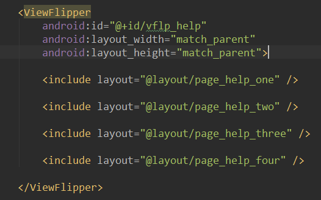
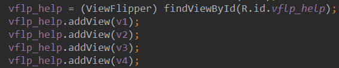
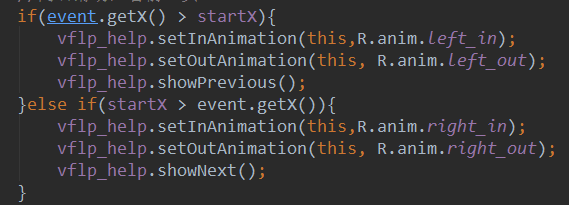
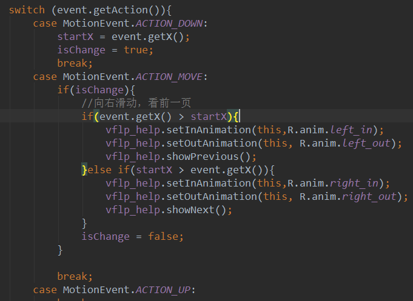

本節の導入：
本節で紹介するのはViewFlipperです。これはAndroid標準搭載のマルチページ管理コントロールで、自動再生も可能です！ ViewPagerとは異なり、ViewPagerはページ単位ですが、ViewFlipperはレイヤー単位です。ViewPagerと同様に、多くの場合、 アプリ起動後のガイドページや画像カルーセルに使われます。本節ではViewFlipperを使って簡単な画像 カルーセルの例を作ってみましょう〜公式API：ViewFlipper
1. ViewFlipperにViewを追加する2つの方法
1）静的インポート
いわゆる静的インポートとは、図のように各ページをViewFlipperの間に追加することです！

2）動的インポート
addViewメソッドでViewを追加します

2. よく使うメソッド
- setInAnimation：Viewが画面に入る時に使用するアニメーションを設定する
- setOutAnimation：Viewが画面から出る時に使用するアニメーションを設定する
- showNext：このメソッドを呼び出して、ViewFlipper内の次のViewを表示する
- showPrevious：このメソッドを呼び出して、ViewFlipperの前のViewを表示する
- setFilpInterval：View間の切り替え間隔を設定する
- setFlipping：上で設定した時間間隔で全てのViewの切り替えを開始する。切り替えはループします
- stopFlipping：Viewの切り替えを停止する
3. 使用例
1）例1：ViewFlipperを使った画像カルーセル(静的インポート)
実装効果図：

実装コード：
各ページのレイアウトはシンプルなImageViewです。ここでは省略します〜まず2つの入場および 退場アニメーションを掲載します：
right_in.xml：
<?xml version="1.0" encoding="utf-8"?>
<set xmlns:android="http://schemas.android.com/apk/res/android">
<translate
android:duration="2000"
android:fromXDelta="100%p"
android:toXDelta="0" />
</set>
right_out.xml：
<?xml version="1.0" encoding="utf-8"?>
<set xmlns:android="http://schemas.android.com/apk/res/android" >
<translate
android:duration="2000"
android:fromXDelta="0"
android:toXDelta="-100%p" />
</set>
次にactivity_main.xmlレイアウトファイル：
<RelativeLayout xmlns:android="http://schemas.android.com/apk/res/android"
xmlns:tools="http://schemas.android.com/tools"
android:layout_width="match_parent"
android:layout_height="match_parent"
tools:context=".MainActivity">
<ViewFlipper
android:id="@+id/vflp_help"
android:layout_width="match_parent"
android:layout_height="match_parent"
android:inAnimation="@anim/right_in"
android:outAnimation="@anim/right_out"
android:flipInterval="3000">
<include layout="@layout/page_help_one" />
<include layout="@layout/page_help_two" />
<include layout="@layout/page_help_three" />
<include layout="@layout/page_help_four" />
</ViewFlipper>
</RelativeLayout>
ここではflipInterval = 3000を設定しています。つまり3000msごとに切り替わります〜 最後にMainActivity.javaでViewFlipperのstartFlipping()メソッドを呼び出してスライドを開始するだけです！
MainActivity.java：
public class MainActivity extends AppCompatActivity {
private ViewFlipper vflp_help;
@Override
protected void onCreate(Bundle savedInstanceState) {
super.onCreate(savedInstanceState);
setContentView(R.layout.activity_main);
vflp_help = (ViewFlipper) findViewById(R.id.vflp_help);
vflp_help.startFlipping();
}
}
2）例2：ジェスチャースワイプ対応のViewFlipper(動的インポート)
実装効果図：

コード実装：
前のページへの遷移と次のページへの遷移に分かれるため、上記の2つのアニメーションの他に、さらに2つのアニメーションを追加します：
left_in.xml：
<?xml version="1.0" encoding="utf-8"?>
<set xmlns:android="http://schemas.android.com/apk/res/android" >
<translate
android:duration="500"
android:fromXDelta="-100%p"
android:toXDelta="0" />
</set>
left_out.xml：
<?xml version="1.0" encoding="utf-8"?>
<set xmlns:android="http://schemas.android.com/apk/res/android">
<translate
android:duration="500"
android:fromXDelta="0"
android:toXDelta="100%p" />
</set>
MainActivity.java：
public class MainActivity extends AppCompatActivity {
private Context mContext;
private ViewFlipper vflp_help;
private int[] resId = {R.mipmap.ic_help_view_1,R.mipmap.ic_help_view_2,
R.mipmap.ic_help_view_3,R.mipmap.ic_help_view_4};
private final static int MIN_MOVE = 200; //最小距离
private MyGestureListener mgListener;
private GestureDetector mDetector;
@Override
protected void onCreate(Bundle savedInstanceState) {
super.onCreate(savedInstanceState);
setContentView(R.layout.activity_main);
mContext = MainActivity.this;
//实例化SimpleOnGestureListener与GestureDetector对象
mgListener = new MyGestureListener();
mDetector = new GestureDetector(this, mgListener);
vflp_help = (ViewFlipper) findViewById(R.id.vflp_help);
//动态导入添加子View
for(int i = 0;i < resId.length;i++){
vflp_help.addView(getImageView(resId[i]));
}
}
//重写onTouchEvent触发MyGestureListener里的方法
@Override
public boolean onTouchEvent(MotionEvent event) {
return mDetector.onTouchEvent(event);
}
//自定义一个GestureListener,这个是View类下的，别写错哦！！！
private class MyGestureListener extends GestureDetector.SimpleOnGestureListener {
@Override
public boolean onFling(MotionEvent e1, MotionEvent e2, float v, float v1) {
if(e1.getX() - e2.getX() > MIN_MOVE){
vflp_help.setInAnimation(mContext,R.anim.right_in);
vflp_help.setOutAnimation(mContext, R.anim.right_out);
vflp_help.showNext();
}else if(e2.getX() - e1.getX() > MIN_MOVE){
vflp_help.setInAnimation(mContext,R.anim.left_in);
vflp_help.setOutAnimation(mContext, R.anim.left_out);
vflp_help.showPrevious();
}
return true;
}
}
private ImageView getImageView(int resId){
ImageView img = new ImageView(this);
img.setBackgroundResource(resId);
return img;
}
}
コードのポイント解説：
1. ここでは動的な方法でViewを追加しています。ここでは単純なImageViewですが、自分のニーズに応じて拡張できます！ 2. 注意深い方はお気づきでしょうが、ここでのジェスチャーはonTouchEventで直接判断しているのではなく、onTouchイベントを オーバーライドしてActionを判断しています。そしてMotionEvent.ACTION_MOVEの場合は、以下のコードを実行します：

その後、エミュレータではマウスの関係で頻繁に振動しないことがわかりましたが、実機では指が常に震えているため ACTION_MOVEが常にトリガーされ、Viewが切り替わり続けてしまいました。そこでBerial(B神)の提案を考慮し、 値を追加して判断することにしました。フラグを追加するのです：

それで動作はしますが、やはり少しスムーズさに欠け、違和感がありました。その後、やはりジェスチャークラスを使い、onFlingで直接処理する 方が良いと考え、上記のコードが生まれました。動作はとてもスムーズです〜 もちろん、Gestureジェスチャーに詳しくない方は、以前書いた記事を参照してください：Android基礎入門チュートリアル——3.8 Gesture(ジェスチャー)
4. コード例のダウンロード
本節のまとめ：
はい、本節ではViewFlipper(ビュー反転)の基本使用について解説しました。今後画像カルーセルやガイドページを作る際に、 選択肢が一つ増えましたね〜ええ、以上です。ありがとうございました〜
クリックしてノートをシェア
<p style="font-size:14px;">ノートは本記事の内容を拡張したものである必要があります！</p><br> <p style="font-size:12px;"><a href="../tougao.html" target="_blank">記事の投稿は、こちらをクリック</a></p> <p style="font-size:14px;"><a href="./runoob-user-test-intro.html" target="_blank">登録招待コードの取得方法</a></p> <h3 class="text-muted"><i class="fa fa-info-circle" aria-hidden="true"></i> ノートを共有する前に<a href=".." class="runoob-pop">ログイン</a>が必要です！</h3> <p><a href="./runoob-user-test-intro.html" target="_blank">登録招待コードの取得方法</a></p>